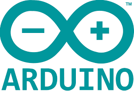
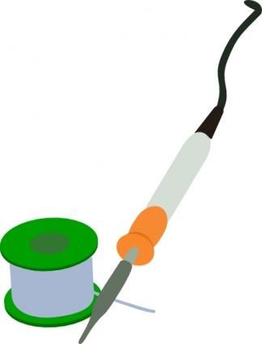
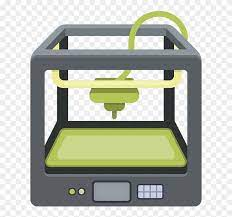
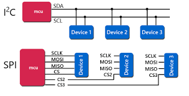

Skill
Projects


matt-downing.com
| Skill | Percent |
|---|---|
| Circuit Maker | 85% |
| Altium | 25% |
| KiCAD | 20% |
| Raspberry Pi | 80% |
| Arduino | 80% |
| Soldering | 60% |
| 3D Printing | 50% |
| CAN BUS | 60% |
| I2C/SPI | 70% |
| STM32CubeIDE | 55% |
| Python | 30% |
| C/C++ | 45% |
| HTML/CSS/JS | 15% |
Skill |
Projects |
|
Successfully completed multiple projects from start of schematic to exporting Gerber files using this tool. Porjects include PCB bootcamp, Binary clock, Programmer interface boards, 5 revisions of open-loop pipette, LED controller, Remote power controller |
| Developed Underdesk sensor project with 3 revisions | |
| Taught a workshop in KiCAD for ease of use between students of Mac and Windows OS | |
|
Many personal projects including LED projects, Octoprint to control a 3D printer, PCB Bootcamp. Setup from OS configuration to SSH connection to controlling many I/O pins on projects including Gantry system sent to customers |
|  | Created laptop cooling fan controller, quick prototyping of different communication protocols and sensor testing, other smaller personal projects |
|  | Soldering skills include through hole, surface mount, wires, small package sizes including 0402, 0603, QFN, SOIC, DIP |
|  | Have built and troubleshot multiple 3D printers including Lulzbot TAZ series as well as Ender 3 v2. Designed components in Solidworks and created .stl files to be printed |
|
Developed CAN communication to add as a feature to a pipette project. Developed hardware schematic and layout for microcontroller and transceiver. Created firmware in STM32 to have successful communication between devices |
|  | Have used SPI to control LED strips, debugged over long wire distance. Have used I2C for many applications where reduced wiring was preferred over speed |
|
Developed Binary Clock project and Open-loop pipette project in STM32's Cube IDE from microcontroller pin placement to writing some basic firmware in C to control the systems |
|
Created scripting of gantry system via Jupyter notebook and python |
|
Created many programs in C and C++ language including embedded microcontrollers in STM32 and Arduino |
| Created this website using these tools |